KOContour
The app can be installed from:
Requires Windows 10 (build 1809) or later, or Windows 11.
Contour map display for elevation data files or elevation servers such as the Open Topo Data server.
Windows UWP Microsoft Store Free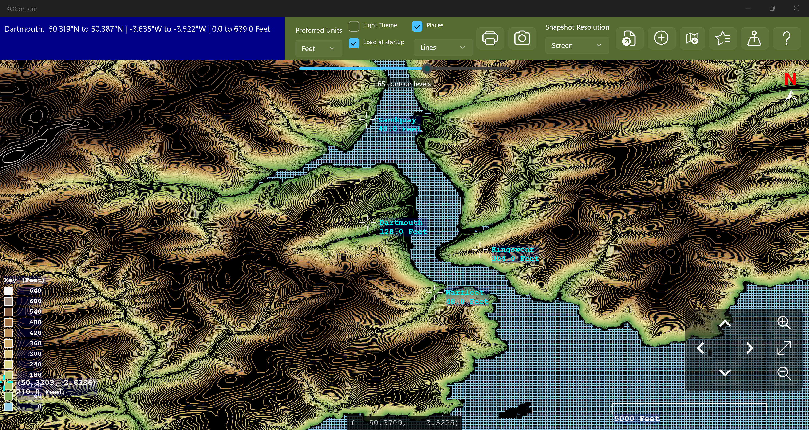
KOContour reads in elevation data files from your computer and displays them as contour maps. A typical data file would look like this:
type latitude longitude altitude (ft) name desc T 53.231479474 -6.299506408 1672.9 Stillorgan Ireland T 53.231479474 -6.299119017 1678.8 T 53.231479474 -6.298731626 1687.9 T 53.231479474 -6.298344235 1698.1 T 53.231479474 -6.297956845 1704.0 T 53.231479474 -6.297569454 1708.2 T 53.231479474 -6.297182063 1709.2
The example above assumes tab-separated columns, which is recommended so that your description field can then use commas. In the sections below there are screenshots showing how the main features work.


There are a number of Digital Elevation Model (DEM) servers on the internet. KOContour can get data from the Open Topo Data server. This is the easiest
way, but because the site limits you to 100 locations per call, at one-second intervals, and no more than 100,000
points per day, it can be a little slow depending on the grid resolution you choose from the dropdown below the
dataset name. You can use a different server so long as the API format matches Open Topo. You can also follow the
instructions for hosting the server yourself, but that is not necessary if you use the default of
https://api.opentopodata.org/. When you click on the Create TSV from DEM server button you will
see a file picker which lets you specify where to save the data — I recommend making a ContourMaps folder
under your Pictures folder.
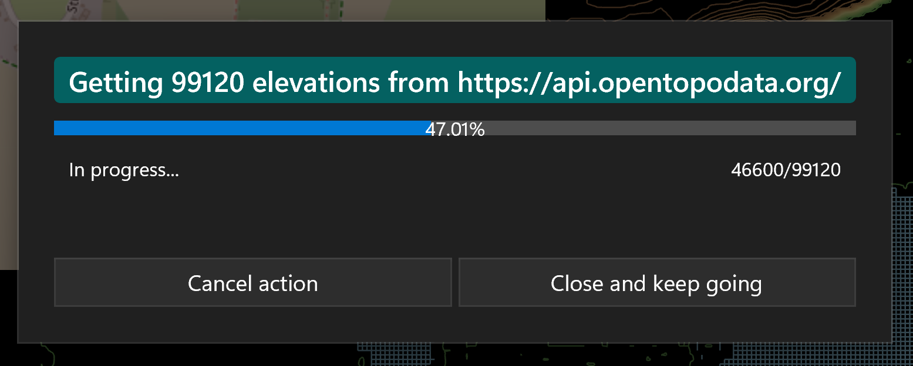
You will then see a progress information popup, which you can hide by clicking the Close and keep going button (click on the main toolbar button to see it again), and you can cancel the operation if, for example, you are warned that the dataset you chose does not have elevations for the points you requested. A good choice for North America and the UK seems to be the Mapzen dataset, but your mileage may vary. Once the download is complete you can close the progress box and then use the Load Data button to load the file you created.
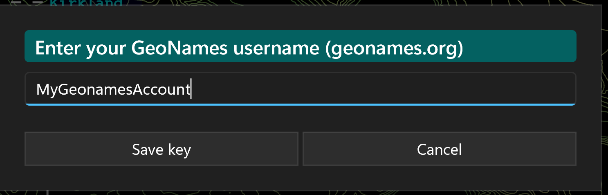
You can register for various free map services with DEM servers, or GeoNames which, for individual, low-use, are likely more than adequate in the speed and number of daily transactions.
Once you have your account and username or key, click on the padlock button, and paste the appropriate one into the
popup dialog.
Click Save to securely save the key in the local storage for your app. You are now ready to download data
from the map service
or elevation data for individual places from GeoNames.
How the main OpenTopoData public datasets compare for resolution/quality:
| Dataset | Res | Coverage | Notes |
|---|---|---|---|
mapzen | ~30 m | Global (incl. high latitudes & bathymetry) | A composite — picks the best source per region (SRTM, ASTER, and national high-res like NED / EU-DEM where available). Best general-purpose default. |
aster30m | 30 m | Global ~83°N–83°S | Real 30 m everywhere, but ASTER GDEM is noisier / more artifact-prone than SRTM. |
srtm30m | 30 m | 60°N–56°S only | Cleaner than ASTER, but no high latitudes. |
ned10m | 10 m | USA only | Higher res — best for US areas. |
eudem25m | 25 m | Europe | Better than 30 m for the UK / Europe. |
nzdem8m | 8 m | New Zealand | Highest res where it applies. |
mapzen (it effectively is ASTER / SRTM plus better data where it exists).ned10m (US), eudem25m (UK / Europe), nzdem8m (NZ).aster30m is a fine fallback for places mapzen / srtm don't cover well (e.g. far north), but I wouldn't pick it as the everyday choice.KOContour draws its contours from a regular rectangular grid of elevation readings: the contouring algorithm needs evenly-spaced points laid out in rows and columns, not a scattering of random measurements. The Create GPX file option builds exactly such a grid for the area you specify — a centre latitude/longitude and a horizontal extent — but writes it out as a .gpx file in which every grid node is a waypoint that has a latitude and longitude but no elevation yet.
You then hand that file to gpsvisualizer.com, whose free Add DEM elevation data tool looks up an elevation for every waypoint from its digital elevation models (SRTM and others) and gives you back a file with the elevations filled in. Because the points were laid out as an evenly-spaced lattice, that returned file is already a complete elevation grid, ready for KOContour to plot. The appeal of this route is that it needs no DEM-server account or API key of your own — GPSVisualizer does the elevation lookup for you — and it lets you request a higher-resolution grid than the throttled DEM-server route comfortably allows.
To use this method, select the Create GPX file radio button and use the Generate GPX file button to create the GPX grid file. Save it wherever you like, then feed it into gpsvisualizer.com/convert_input. Download the result file and rename it as <Placename>.txt or .tsv — I use .tsv to distinguish data files from ordinary text files, but that is up to you — then copy the file from Downloads to your data folder. This process looks a little complex at first, but you only need to do it once per new map area, and it is pretty simple once you have done it a few times. (If you have access to a data source and the technical wherewithal, you can also create a grid data file yourself.)
Alternatively, here is a link to download Maui.tsv — a tab-separated data file for Maui, ready to use. As always, do a virus scan just as you would for any file you download.
To generate a GPX grid for Maui, go to your favourite map source, e.g. Google Maps, and enter Maui into the search box. Copy the coordinates of the centre of
the area of interest — with Google Maps, right-click on the chosen spot and left-click on the coordinates that pop
up, which copies them to the clipboard. In this example it will be something like
20.800841499225772,
-156.32722033846065
. Then click on the GPX button and the following dialog will appear.
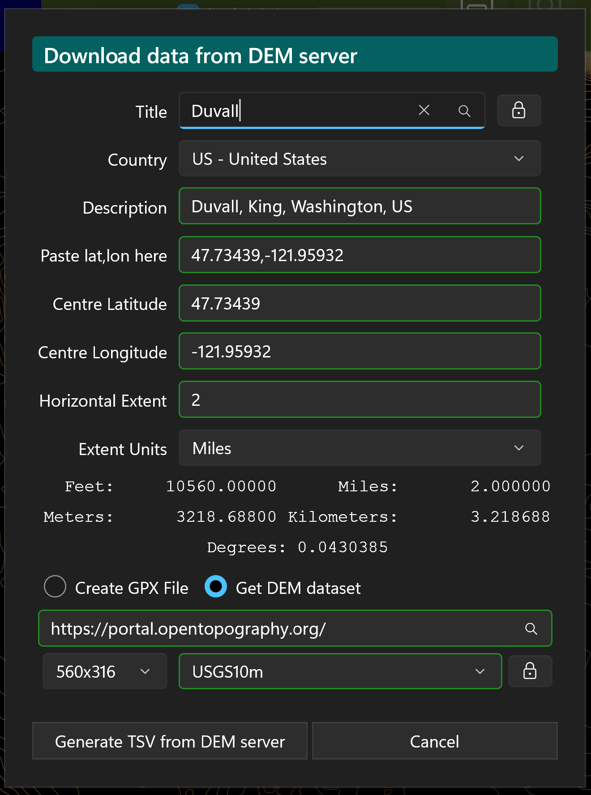
Click on the field labelled Paste lat,lon here and paste the coordinates you just copied. This will fill the Latitude and Longitude fields — you can also fill in those fields individually if you prefer, and they will stay in sync. As a quick alternative, you can type a place name into the Title field and choose an entry from the drop-down list of suggestions that appears — selecting one fills in the coordinates for you; use the country selector beside the Title to restrict the search to a particular country. Fill in the other fields until they all show a green border, indicating they are valid. The grid generated will be a 500×300 (lon×lat) grid, regardless of the extent you choose. When the Generate GPX File button becomes enabled, click on it and save the file as Maui.gpx.
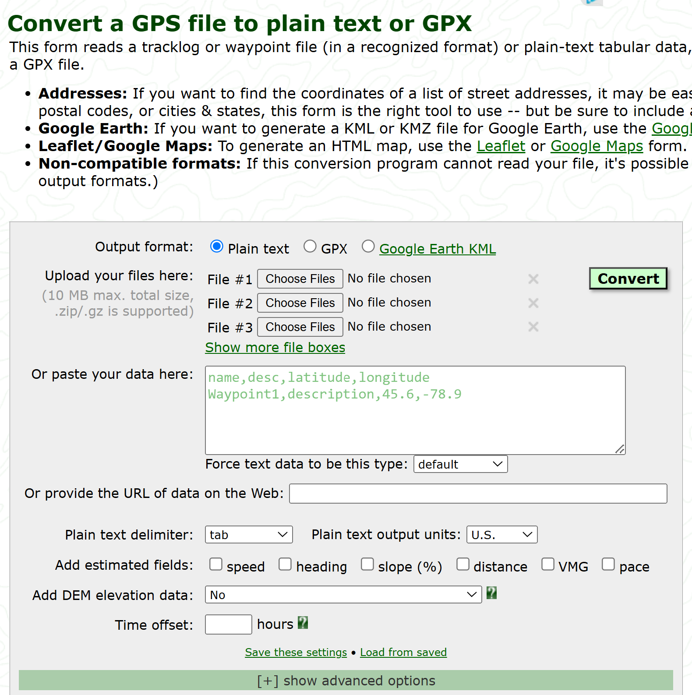
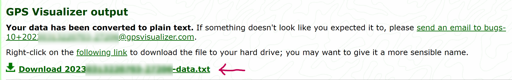
Then go to gpsvisualizer.com/convert_input and add the file you created using the control marked 1 in the screenshot above. Set Add DEM elevation data to best available source using control 2, then click the green Convert button marked 3 and wait for the file to finish processing.
When the download link appears, click it and open the Downloads folder. Rename the file to something like Maui.tsv and copy or move it to your preferred folder under Pictures. You are now ready to load the data into KOContour.

Click the highlighted button, which will show a standard file picker letting you select one of the input files you created above. A contour map will be generated from the data and should look similar to the picture below.
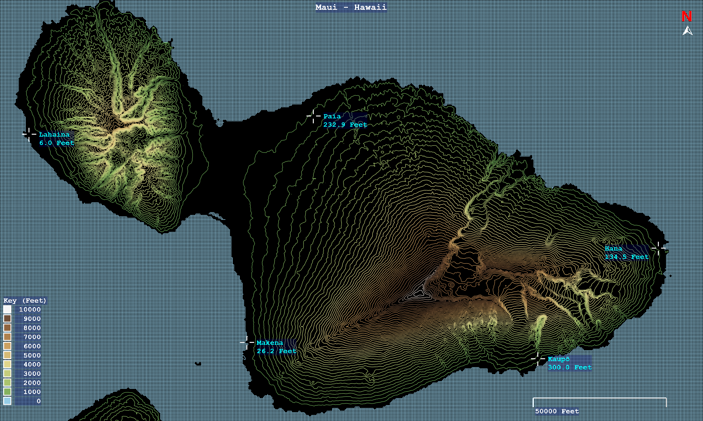
Contour map of Maui generated from the downloaded elevation data
When you load a data file it is added to the Show Favourites list dialog, and you can double-click on entries there to load the data again. Entries are sorted with the most recently loaded at the top. Superimposed on the map you can see the zoom and pan controls, along with the height scale on the left and the distance scale in the lower right.
To zoom into a particular area, click and drag a rectangle across the map. A white selection box — matching the proportions of the map window — follows the pointer as you drag, and releasing the mouse button zooms to the selected area. Press Esc while dragging to cancel without zooming. The zoom and pan buttons in the lower-right corner give step-by-step control.
On a touchscreen you can also use two-finger gestures on the map: pinch two fingers together or spread them apart to zoom out or in — the zoom is centred on the point midway between your fingers — and drag with two fingers to pan the map, which follows your fingers and stops at the edges of the loaded data so you cannot scroll off into empty space. Pinching and panning can be done together in one gesture. A mouse wheel (or precision-touchpad pinch) also zooms.
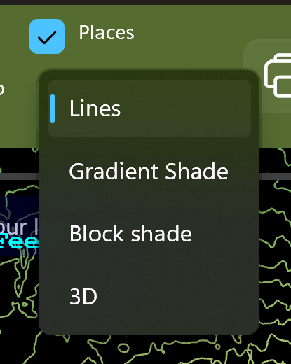
The drop-down near the top of the window selects how the loaded data is drawn. There are four modes:
The colours used by every mode are set by the colour scheme, and the number of bands by the contour-levels slider, both described below.
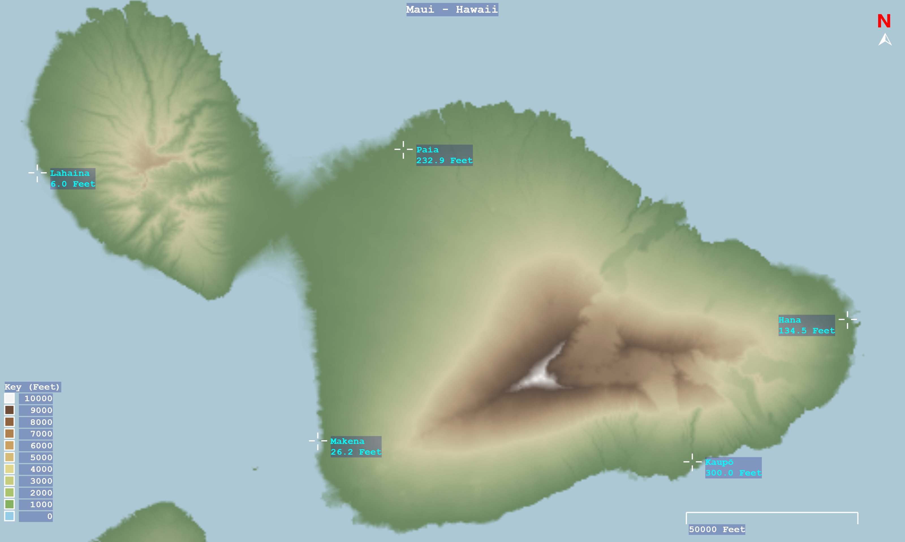
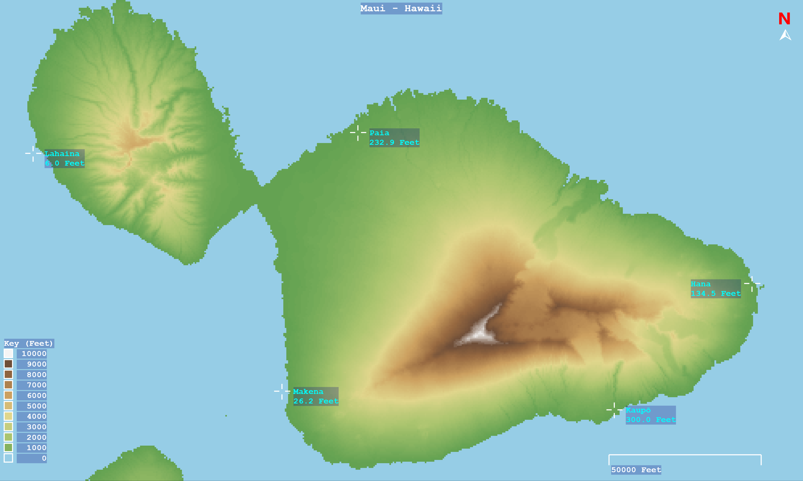

The slider near the top of the window sets how many contour levels are drawn; the "N contour levels" label beneath it shows the current count. The levels snap to "nice" round step sizes (for example 5, 10, 50, 100 …) so the colour key stays easy to read. With the slider focused, the left and right arrow keys step down or up to the next preferred set of levels.

Choosing 3D in the display-mode drop-down draws the data as a shaded relief surface, lit from the north-west. Any places you have added appear as little flagpoles whose flags carry the place names, and the red N compass arrow points to the projected north.
Rotate the view by dragging on it with the mouse (or one finger): dragging left/right spins the view (its compass bearing) while dragging up/down tilts it between almost straight-down and nearly edge-on.
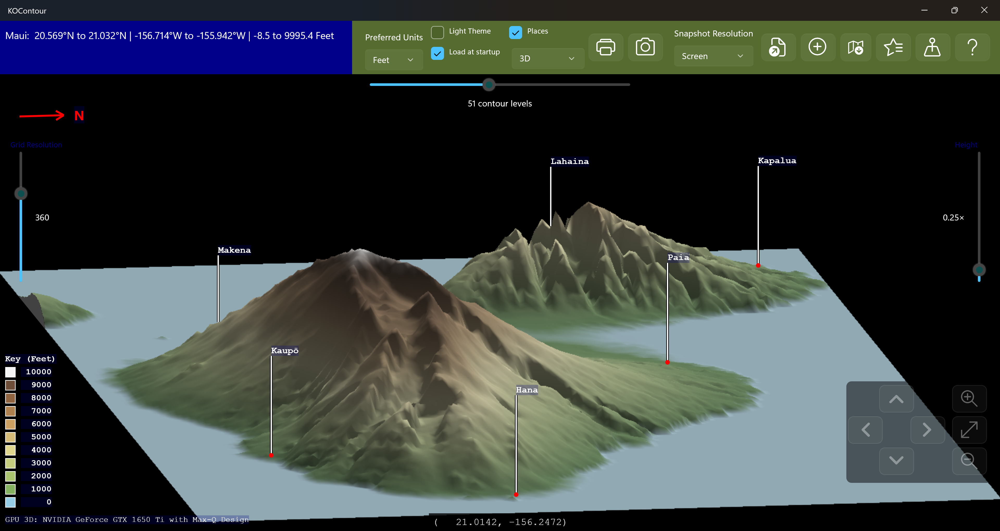
Two vertical sliders sit beside the view:
Zoom the 3D view by pinching with two fingers, or with the mouse wheel / trackpad. The terrain and its labels zoom together.
For smooth rotation the 3D surface is drawn on your graphics card (GPU) where a suitable one is
available, falling back to the processor otherwise. A small marker in the lower-left corner of the map shows
which is in use (for example GPU 3D: …, or CPU only).
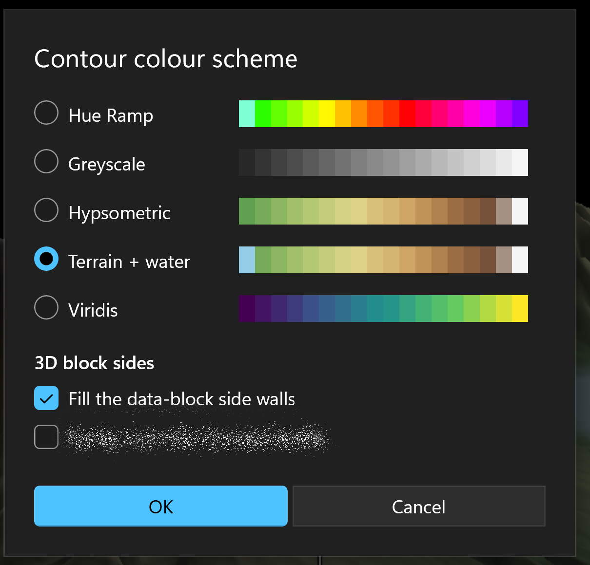
Tap (or click) the contour-levels key in the lower-left of the map to open the Contour colour scheme chooser. Each option shows a preview strip of the colours your current contour heights would have under that scheme. The schemes are:
The chosen scheme applies to every display mode, including the 3D view, and is remembered between sessions.
The chooser also has a 3D block sides section with two switches for the 3D relief view:


Click the highlighted button to show the Add or Edit a Place dialog. This lets you enter a place name, description, coordinates, and elevation for a new place, and add it to the list in the Show Places list dialog. If you double-click on a place in that list it will also invoke the Add or Edit a Place dialog. If the place does not have elevation data (shown as empty or −1000000) and it is within the currently loaded map data, the elevation field will be highlighted in purple with a suggested value filled in. Click Update Place / Add Place to save, or Cancel to exit without changes.
The Place Name field is also a search box: start typing and a drop-down list of matching places appears. Use the country selector beside it to narrow the search to a particular country. Choosing a place fills in its coordinates, sets the description to Place, County, Country, and fills in the elevation automatically. Place search is powered by GeoNames.
You can also right-click (or press and hold) anywhere on the map to see a list of the nearest places. Choosing one opens the Add or Edit a Place dialog ready-filled with that place's name, description and coordinates, together with its elevation where available. The most recently chosen place is remembered, so clicking the Add or Edit a Place button afterwards re-opens the dialog pre-filled with it.
As an example, let's add Lahaina.
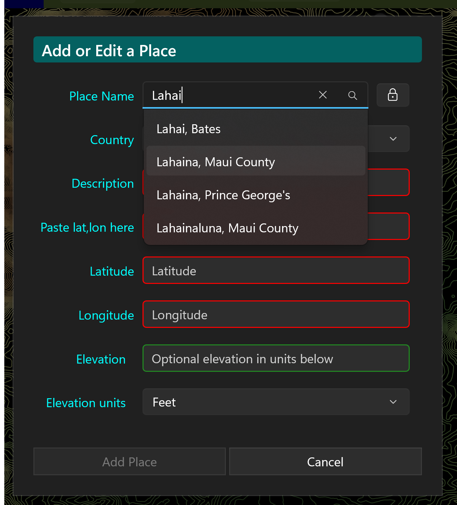
If you have not yet set up a free GeoNames account (and I would strongly recommend that you do) you can use Google Maps as described above to get the coordinates for Lahaina and paste them into the dialog, then add the other details If you have set up your GeoNames account, and entered the username then you can type the first few letters of the place name and a list of suggestions will pop up. Click on the one you you want, and it will populate all the fields in the dialog for you. This is the easiest way of getting the data.
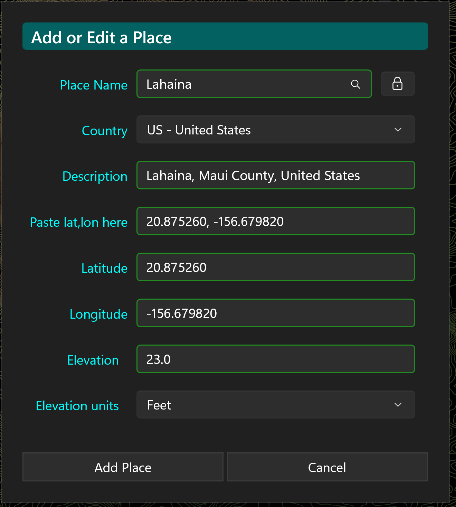
With the coordinates filled in, give the location a name and a short description, and add an elevation if you know it — or leave the elevation blank and let KOContour suggest one from the loaded map data. As a shortcut you can type the place name straight into the Place Name search box and pick it from the drop-down list, which fills in the coordinates (and elevation) for you. When every field shows a valid (green) value, click Add Place to save it.
Lahaina will appear on the map and be highlighted as shown.

Try adding another place such as Paia. Leave the elevation unset and save the new place, then continue to the next section.

Click the highlighted button to show the Show Places list dialog. Places are maintained in alphabetical order. Double-clicking an entry launches the Add or Edit a Place dialog. If a place does not have elevation data and it is within the currently loaded map data, the elevation field will be highlighted in purple with a suggested value.
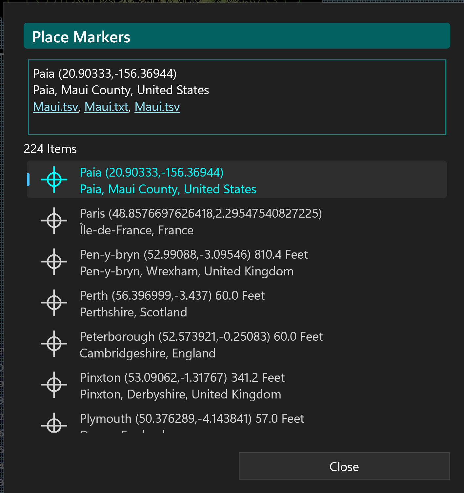
Try looking for Paia — you can jump to the P section by pressing the W key. Double-click on Paia; if the elevation was left as the default (−1000000 means undefined), it will suggest an elevation based on the nearest contour line and highlight as shown highlighted - 200 feet in this case. Places visible on the currently loaded map are shown in cyan, otherwise they are shown in light gray. If you re-type in the place name it will suggest a more accurate elevation from GeoNames - 232.9 feet - if you have set up your account on that as described below.
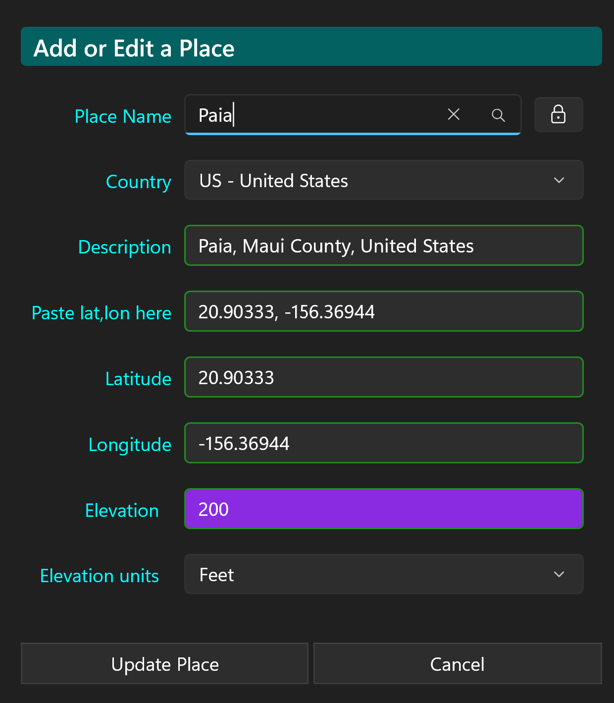
GeoNames requires creating an account for programmatic use, but it is totally free and does NOT require a payment card, or credit-card-on-file. I would strongly recommend doing so since it lets you do automated lookups of the latitudes and longitudes of named places, or places you click on the map, and takes only a couple of minutes:

The username is the credential — there's no separate API key or secret. You just pass
&username=yourname on each request (which is why it's plain http, and why you shouldn't hardcode a
username you care about into a widely-distributed app, since anyone can read it and spend your daily quota).
You can easily test your account by entering the follwing into the address field of your browser:
http://api.geonames.org/searchJSON?name_startsWith=<placename>&featureClass=P&maxRows=10&username=<username>
Replace <placename> and <username> with the appropriate values for your chosen place, and your account.
This will return a list of place names and the data for each.
Click Update Place to save the place data and elevation, which will then appear on the map under the place name.
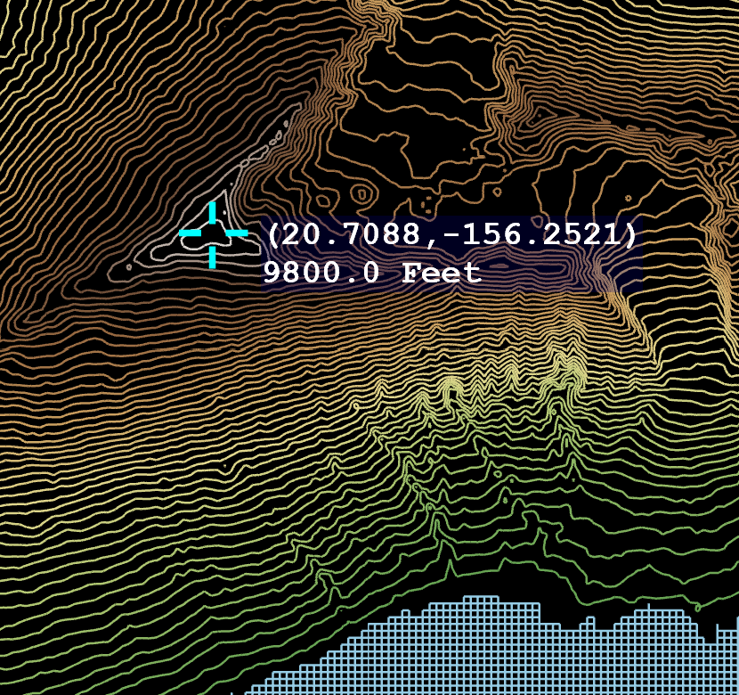
To find the elevation of a point, click on the map at the desired location. A marker will appear showing the elevation along with the latitude and longitude. To remove it, click again in the centre of the crosshair.

To find the distance between two points, hold the Ctrl key and click on the map at the first location. A marker will appear. Keep holding Ctrl and click the second point. A line will be drawn between the points showing the distance and compass bearing. To remove the measurement tool, click again in the centre of either crosshair.

Click the highlighted button to show the Show Favourites list dialog. The list is maintained in last-access order, most recent first. Double-click an entry to load that data file. If the file no longer exists you will be asked if you would like to remove it from the list.
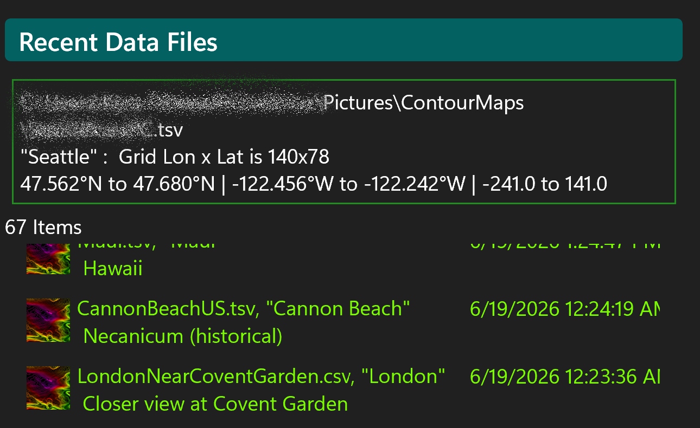
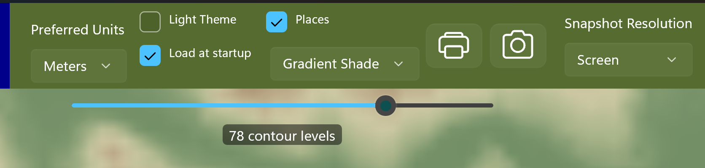
The Light Theme checkbox switches to a light background, which is sometimes better for printing. The Load at startup checkbox causes the app to automatically load the last successfully loaded data file at launch, if it still exists. Both of these settings are persisted across launches. The Show places option is not persisted. The "Snapshot Resolution" controls the resolution of the map snapshot produced by the "camera" button, which creates a PNG or JPG showing just the map portion of the sreen, including the key, places if selected, and title. It can either be the same as the screen, or be UHD.
Everything else is easy to figure out from the tooltips and prompts — have fun exploring!
Draw the data as contour lines, a smooth gradient shade, solid block shading, or a 3D relief surface.
GPU-accelerated 3D terrain you can rotate by dragging, with sliders for vertical exaggeration and mesh granularity, and pinch / mouse-wheel zoom.
Tap the contour key to choose a colour scheme: the original, greyscale, hypsometric terrain tints, terrain-with-water, or perceptually-uniform Viridis.
A slider sets the number of contour levels, snapping to round step sizes; arrow keys step through the preferred level sets.
Download elevation data directly from Open Topo Data servers, with automatic rate‑limit handling and progress reporting.
Create GPX files for any region using a lat/lon centre point, then convert them to elevation TSV files via GPSVisualizer.
Load TSV elevation files and generate detailed contour maps with zoom, pan, height scale, and distance scale overlays.
Add, edit, and store named places with coordinates and elevation, including automatic elevation suggestions from map data.
Click anywhere on the map to display the elevation and coordinates of that point.
Hold Ctrl and click two points to measure distance and compass bearing between them.
Automatically tracks recently loaded data files for quick reloading, with missing‑file cleanup.
Includes light theme mode, load‑at‑startup, and show‑places toggles, with persistent settings.
Type a place name in the Create-GPX or Add-Place dialogs and pick from a drop-down of suggestions, optionally filtered by country, to fill in coordinates and elevation. Powered by GeoNames.
Right-click anywhere on the map to list the nearest places and add any of them to your places with a single click.
Click and drag a proportional selection box across the map to zoom into an area; press Esc to cancel.
The app can be installed from:
Requires Windows 10 (build 1809) or later, or Windows 11.
KOContour is free software.
← Back to KLO Software